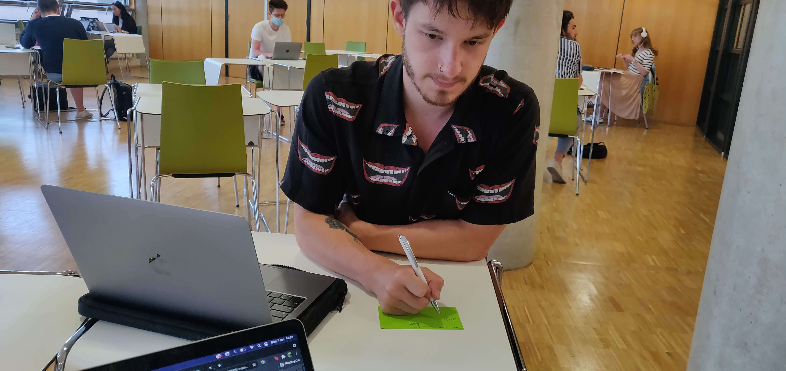
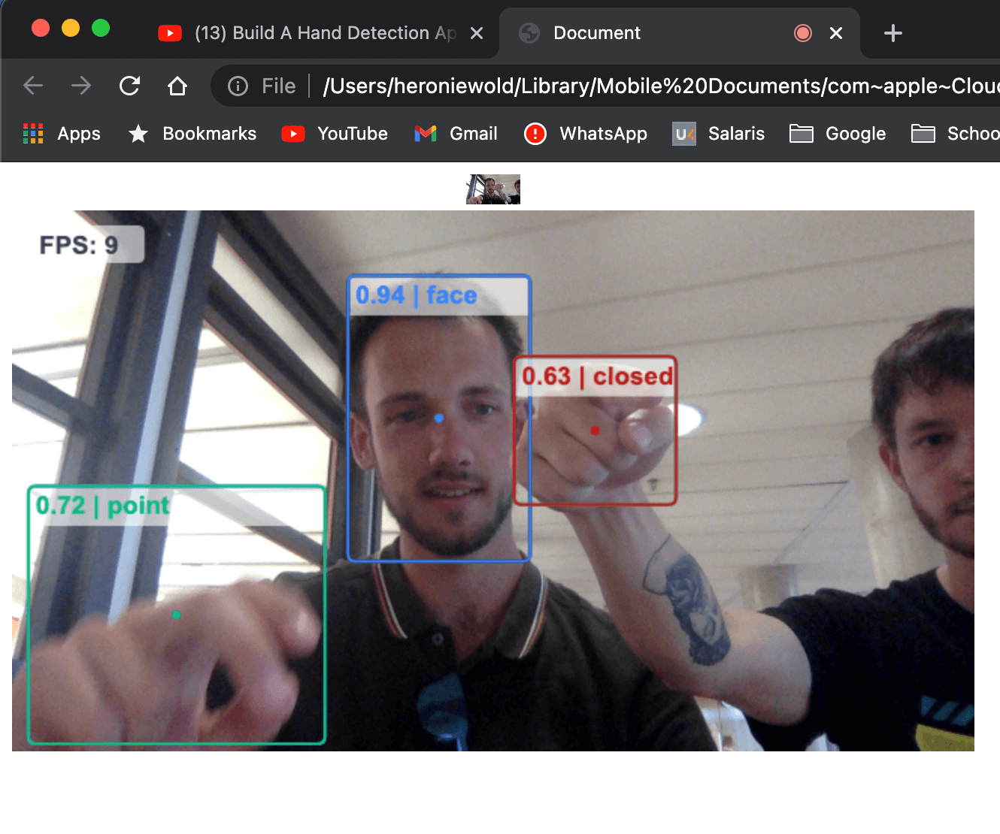

The Labweeks - Making a game that can be controlled with gestures
I did my labweeks with David Lazarevic, a really good midgetfriend of mine. During the labweeks we got assigned to the subject of Playful Interaction. The goal was simple. Design something
that has to do with Playful Interaction. At first we read the wrong document and we thought we had to design something that inspired positive behaviour at THUAS building, but looking back
that wasn't really the case. I didn't really matter tho. We quickly realized we wanted to make something that had to do with human movement. At first we were thinking of a game in an elevator,
something like pong, which could be controlled by moving your feet. This idea didn't really work out for us, but it gave us a good start.
Our next foundation was covered by our previous idea, we wanted to make a game. We started thinking about combining human movement with a game, which led us to computer vision and game
development using Arduino or Processing. David and I decided to divide the work, David would start developing a game in Processing and I would start working on ways to detect human movement
and use this to trigger events in code. After a while we figured that the best way to make this work, would be using P5.js, which is what we ended up using. Using P5, David made a basic,
but pretty funny game and I figured out how to use a handtracking tool to trigger events. After developing a small story and designing sprites for the game, we had everything we needed.
Although the labweeks were mostly online and because we live quite far apart we didn't really meet up outside of school, these 2 weeks were a really cool experience. Instead of working with
the boundaries a regular subject gives you, this was basically a 'we don't care, just do something'. This way of working led to frustrations, because you don't have a guide, but it led
to some really interesting ways of working and seeing what everyone made at the Expo was a really cool experience.
Due to the fact we mostly worked online, I don't really have progress pictures or video's because most of it would be boring codework
 